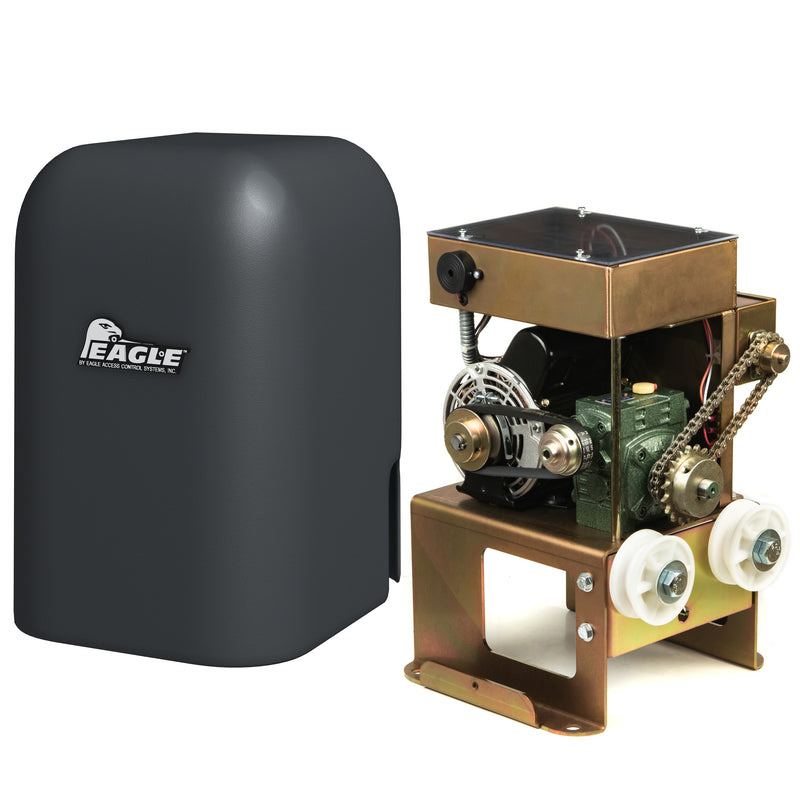

Quick release
Eagle II Swing Opener
Quick-release arm for opening by hand in an outage. Gates up to 14 ft and 400 lb.
$1,849
Buy now
Guide
When the power goes out, an automatic gate still has to open. Here's how each type of opener handles it.
Swing openers use a quick-release mechanism: release the arm and the gate swings by hand. The Eagle II has swivel-arm hardware with a quick-release for operation during a power outage, and the Eagle-100 has an emergency quick-release lever that frees the gate for manual use.
Many slide openers are crank-to-open: you turn a crank to move the gate along its track. The Eagle-1 ships with a gate crank in the box.
A fail-secure opener keeps the gate closed when the power is lost, so a power cut doesn't leave your property open – you open it deliberately with the crank. That's why it's the choice for apartment buildings, gated communities and industrial sites: the Eagle 2000 APT series is fail-secure with crank-to-open.
Each of these has a built-in way to open the gate without power.
Quick-release arm for opening by hand in an outage. Gates up to 14 ft and 400 lb.

Emergency quick-release lever. Gates up to 18 ft and 600 lb.

Includes a gate crank. Sliding gates up to 18 ft and 300 lb.

Stays closed without power; crank to open. Gates up to 50 ft and 2,500 lb.